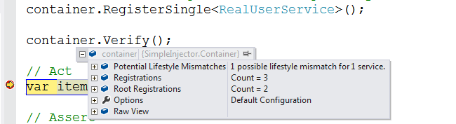
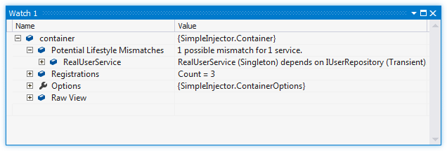

Diagnostic Services¶
The Diagnostic Services allow you to analyze the container’s configuration to search for common configuration mistakes.
How to view diagnostic results¶
There are two ways to view the diagnostic results - results can be viewed visually during debugging in Visual Studio and programmatically by calling the Diagnostic API.
Diagnostic results are available during debugging in Visual Studio after calling Container.Verify(). Set a breakpoint after the line that calls Verify() and when the breakpoint breaks, hover over the Container instance with the mouse. The debugger context menu will appear for the Container variable which you can unfold to view the diagnostic results. This might look like this:
Another option is to add the container variable to the Visual Studio watch window by right clicking on the variable and selecting ‘Add Watch’ in the context menu:
The debugger views also allow visualizing your application’s dependency graphs. This can give you a good view of what the end result of your DI configuration is. By drilling into the list of Registrations or Root Registrations, you can select the text visualizer (the magnifying glass icon) on the DependencyGraph property on any of the lister registrations:

This same information can be requested programmatically by using the Diagnostic API. The Diagnostic API is located in the SimpleInjector.Diagnostics.dll. This dll is part of the core NuGet package. Interacting with the Diagnostic API is especially useful for automated testing. The following is an example of an integration test that checks whether the container is free of configuration warnings:
[TestMethod]
public void Container_Always_ContainsNoDiagnosticWarnings() {
// Arrange
var container = Bootstrapper.GetInitializedContainer();
container.Verify();
// Assert
var results = Analyzer.Analyze(container);
Assert.IsFalse(results.Any(), Environment.NewLine +
string.Join(Environment.NewLine,
from result in results
select result.Description));
}
Limitations¶
The Diagnostic Services work by analyzing all information that is known by the container. In general, only relationships between types that can be statically determined (such as analyzing constructor arguments) can be analyzed. The Container uses the following information for analysis:
- Constructor arguments of types that are created by the container (auto-wired types).
- Dependencies added by Decorators.
- Dependencies that are not registered explicitly but are referenced as constructor argument (this included types that got created through unregistered type resolution).
The Diagnostic Services cannot analyze the following:
- Types that are completely unknown, because these types are not registered explicitly and no registered type depends on them. In general you should register all root types (types that are requested directly by calling GetInstance<T>(), such as MVC Controllers) explicitly.
- Open-generic registrations that are resolved as root type (no registered type depends on them). Since the container uses unregistered type resolution, those registrations will be unknown untill they are resolved. Prefer registering each closed-generic version explicitly, or add unit tests to verify that these root types can be resolved.
- Dependencies added using the RegisterInitializer method:
container.RegisterInitializer<IService>(service => {
// These dependencies will be unknown during diagnosis
service.Dependency = new Dependency();
service.TimeProvider = container.GetInstance<ITimeProvider>()
});
- Types that are created manually by registering a Func<T> delegate using one of the Register<TService>(Func<TService>) overloads, for instance:
container.Register<IService>(() => new MyService(
// These dependencies will be unknown during diagnosis
container.GetInstance<ILogger>(),
container.GetInstance<ITimeProvider>()));
- Any dependencies that are injected using the (now deprecated) InjectProperties method will not be seen as dependencies of the type they are injected into.
- Dependencies that are resolved by requesting them manually from the Container, for instance by injecting the Container into a class and then calling container.GetInstance<T>() from within that class:
public class MyService : IService {
private ITimeProvider provider;
// Type depends on the container (don't do this)
public MyService(Container container) {
// This dependency will be unknown during diagnosis
this.provider = container.GetInstance<ITimeProvider>();
}
});